01 / OVERVIEW
Introduction
This project estimates homographies from manually matched features, inverse-warps images with custom nearest-neighbor and bilinear sampling, and combines valid pixels with feather weights. Real experiments include two rectifications, three planar mosaics, and a cylindrical panorama.
Image coordinates are (x = column, y = row), with upper-left pixel center (0,0). EXIF orientation is applied in memory before selecting points. Matrices act on column vectors and map source to destination. All original JPEGs are preserved.
02 / PHOTOGRAPHS
A.1 · Shoot and digitize pictures
I captured overlapping views of an apartment hallway, the Gateway exterior, and the Gateway atrium. The accepted planar mosaics use the two views shown for each scene; extra captures were evaluated separately. The original oriented panorama photographs are 5712×4284. The viewpoint changes reveal perspective and foreground parallax; a perfectly fixed optical center is not claimed.


03 / GEOMETRY
A.2 · Recover homographies
A planar homography has eight independent coefficients after fixing h33=1. For a source feature (x,y) and its match (u,v):
(1) Source-to-target homogeneous mapping
[u,v,1]ᵀ ∼ H [x,y,1]ᵀ H = [[h11,h12,h13], [h21,h22,h23], [h31,h32,1]] u=(h11*x+h12*y+h13)/(h31*x+h32*y+1) v=(h21*x+h22*y+h23)/(h31*x+h32*y+1)
(2) Explicit least-squares system
h = [h11,h12,h13,h21,h22,h23,h31,h32]ᵀ A[2i] = [x, y, 1, 0, 0, 0, -u*x, -u*y] A[2i+1] = [0, 0, 0, x, y, 1, -v*x, -v*y] b[2i]=u; b[2i+1]=v A ∈ ℝ^(2N×8); A h = b numpy.linalg.lstsq(A, b, rcond=None)
The custom computeH uses float64 least squares and rejects nonfinite, rank-deficient or singular solutions. With more than four pairs, the system is overdetermined. It minimizes algebraic error; coordinates are not normalized and no RANSAC or automatic matching is used.
04 / ACTUAL MANUAL DATA
Correspondences and recovered matrix

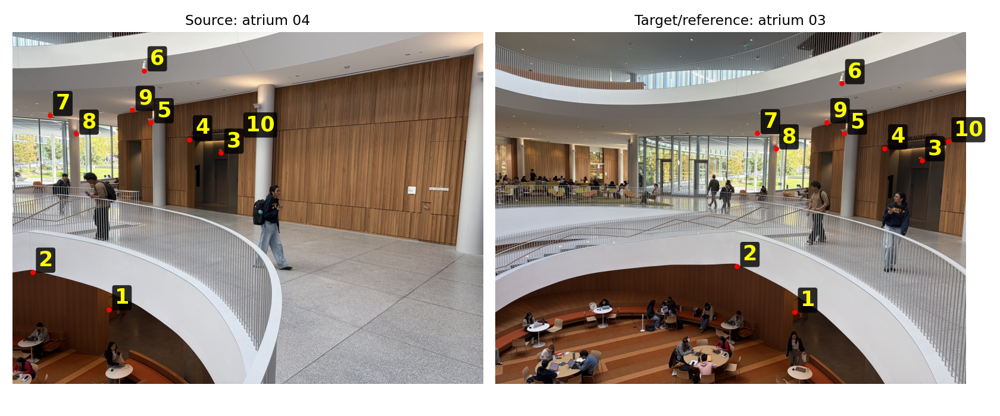
Open full-size imageThis accepted pair produces a 20×8 system. Its first measured pair contributes these actual two rows (rounded for display), with the shown right-hand side:
1169.3 3375 1 0 0 0 -4.2474e+06 -1.226e+07 0 0 0 1169.3 3375 1 -3.9801e+06 -1.1488e+07 b[0:2] = [3632.542580645164, 3403.9309677419355]
The actual source-to-reference homography, normalized to H[2,2]=1, is:
0.366669495 -0.0630069561 2913.12293 -0.194094227 0.802854869 447.626515 -0.000106941797 -3.9579577e-06 1
Forward residuals for this pair have median 5.43 px, mean 6.35 px, and maximum 12.59 px in original target-image coordinates. Small training residuals do not prove alignment at other depths.
| Source → target | N | Median / maximum px |
|---|---|---|
| Hallway left → center | 8 | 9.15 / 17.61 |
| Hallway right → center | 8 | 6.83 / 23.74 |
| Exterior left → center | 9 | 32.44 / 91.17 |
| Exterior right → center | 10 | 9.09 / 28.80 |
| Atrium 01 → 02 | 10 | 6.71 / 12.17 |
| Atrium 02 → 03 | 10 | 7.65 / 10.21 |
| Atrium 04 → 03 | 10 | 5.43 / 12.59 |
| Atrium 05 → 04 | 10 | 7.02 / 14.18 |
There are 75 confirmed pairs in total. The high-error exterior left → center experiment is retained as a diagnostic and excluded from the accepted exterior mosaic. No confirmed points were removed or replaced.
05 / SAMPLING
A.3 · Warp the images
Inverse warping visits each destination pixel center, applies H⁻¹, divides by the homogeneous coordinate, and samples the source. This avoids forward-splatting holes inside valid source support.
(3) Inverse coordinates
[a,b,c]ᵀ = H⁻¹ [x_d,y_d,1]ᵀ s_x=a/c; s_y=b/c x_d=xmin+column; y_d=ymin+row
Nearest neighbor reads (floor(sx+0.5), floor(sy+0.5)). Bilinear interpolation weights the four source neighbors manually:
(4) Bilinear intensity
x0=floor(s_x); y0=floor(s_y) α=s_x-x0; β=s_y-y0 I=(1-α)(1-β)I[y0,x0] + α(1-β)I[y0,x1] + (1-α)β I[y1,x0] + αβ I[y1,x1]
At the last row/column, the repeated boundary neighbor preserves the sample value. Finite inverse coordinates must lie within source pixel-center bounds; other samples remain invalid in a separate mask. Canvas origins preserve negative destination coordinates. The implementation rejects singular transforms, horizon crossings and unsafe allocations.
06 / REAL RECTIFICATIONS
A.3 · Two rectification experiments
The human selected logical TL, TR, BR, BL corners on the front cover and display surface. They map to (0,0), (w−1,0), (w−1,h−1), (0,h−1). The same full-resolution oriented source, H and rectangle were used by both samplers. The displayed rectangles are explicit extractions from saved complete warped canvases; every extracted pixel is valid.
Game case · 497×801

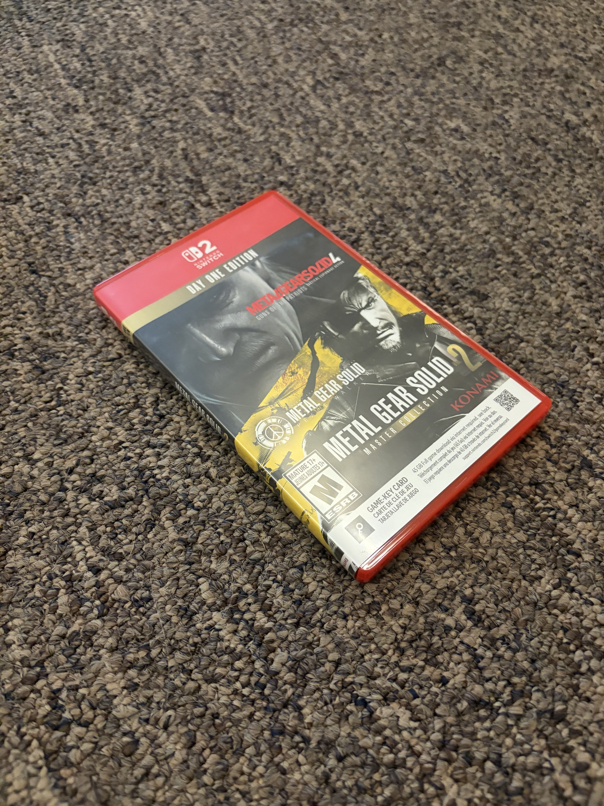
Open full-size image
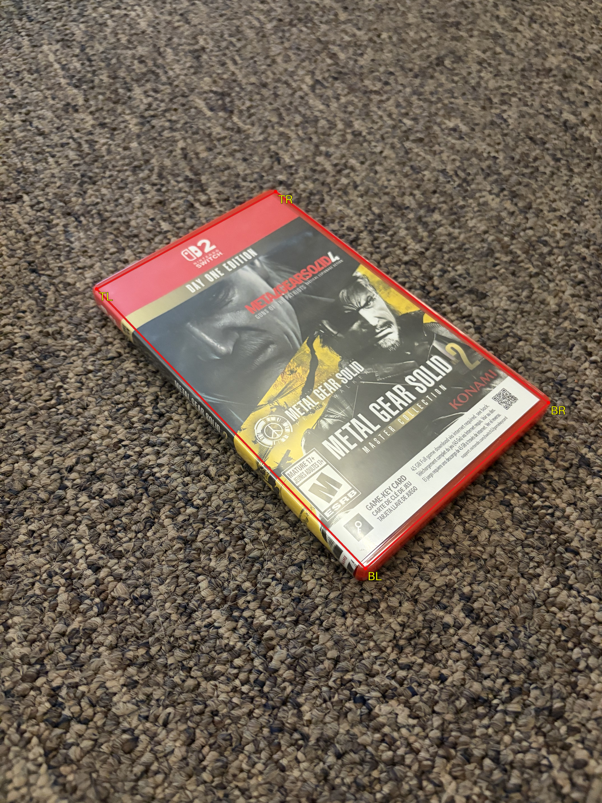
Open full-size imageOpen full-size imageOpen full-size image

Switch display · 961×541

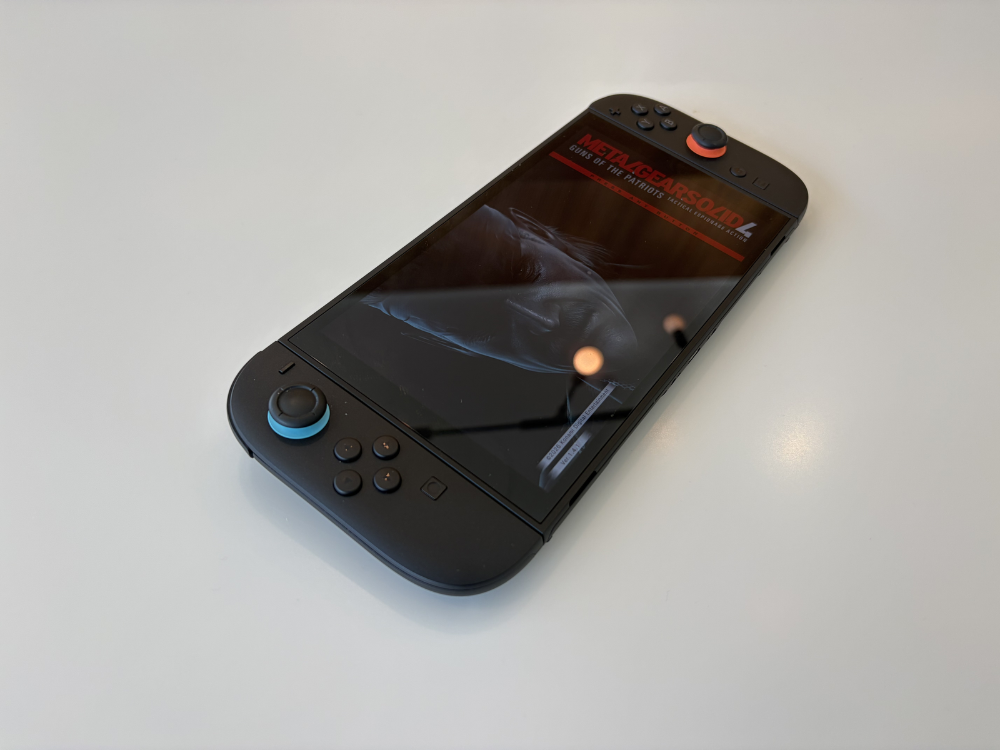
Open full-size image
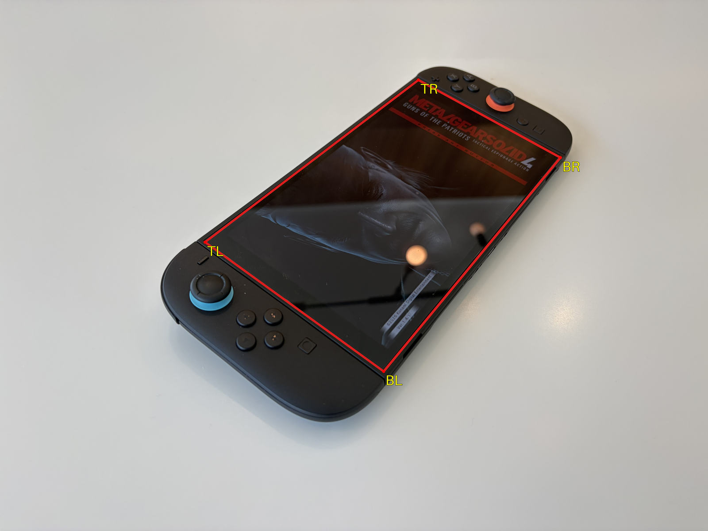
Open full-size imageOpen full-size image

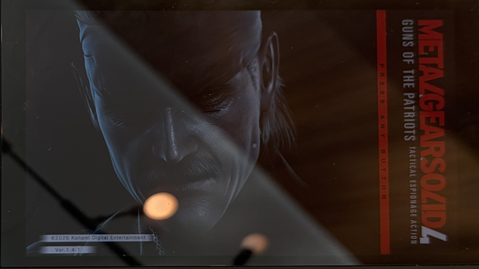
Open full-size image

| Photograph | Nearest | Bilinear |
|---|---|---|
| Game case | 0.1425 (0.1414–0.1450) | 0.3161 (0.3122–0.3168) |
| Switch display | 0.1776 (0.1769–0.1800) | 0.4035 (0.3973–0.4100) |
Timings include warp validation and allocation of the full canvas, excluding loading, H estimation, rectangle extraction, saving, plotting and clicking. Environment: arm64 macOS, Python 3.9.6, NumPy 2.0.2. Bilinear took about 2.2× the nearest time here; this is not an end-to-end or universal speed claim. Maximum four-corner errors were 4.26×10⁻⁸ px and 3.52×10⁻⁸ px, small by construction with four fitted pairs.
07 / PLANAR COMPOSITION
A.4 · Blend images into mosaics
Each accepted scene uses two photographs, with its central view as reference and identity H. The other direct H maps into that reference. Existing custom bilinear inverse warps populate a common canvas with boolean validity masks. Dark photographed pixels remain valid; RGB intensity is not a validity test.
(5) Distance feathering
d_i(p)=distance to nearest invalid mask sample w_i(p)=d_i(p)/Σ_j d_j(p), if Σ_j d_j(p)>0 I_out(p)=Σ_i w_i(p) I_i(p) M_union(p)=[Σ_j d_j(p)>0]
A SciPy Euclidean distance transform supplies mask distances, including an invalid padding ring. Weights sum to one on the valid union. Each source contributes both overlap and exclusive new pixels. Full registered footprints are retained privately; the displayed frames below are documented reference-coordinate crops made after registration and blending, not the full footprints.
Hallway · left + center

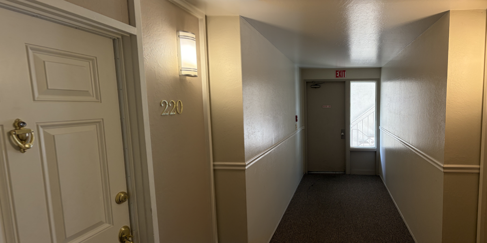
Open full-size imageMolding and the exit doorway remain coherent. The left door expands under the planar projection; local foreground parallax and softness remain. The tighter frame preserves new content from both images without claiming the three-image footprint is distortion-free.
Gateway exterior · center + right

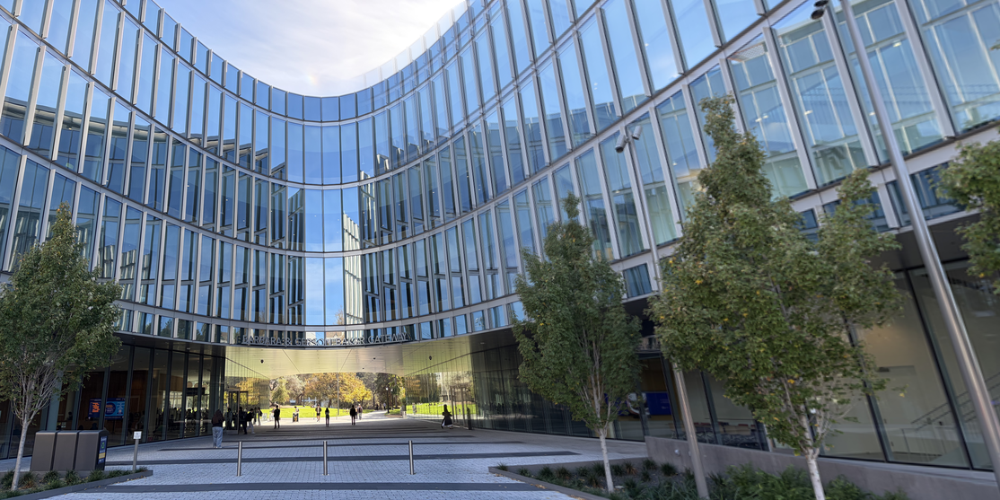
Open full-size imageArchitectural lines are broadly coherent. Trees and the far-right façade are softer and somewhat stretched. The failed left-to-center alignment is excluded rather than presented as a successful three-frame stitch.
Gateway atrium · 03 + 04

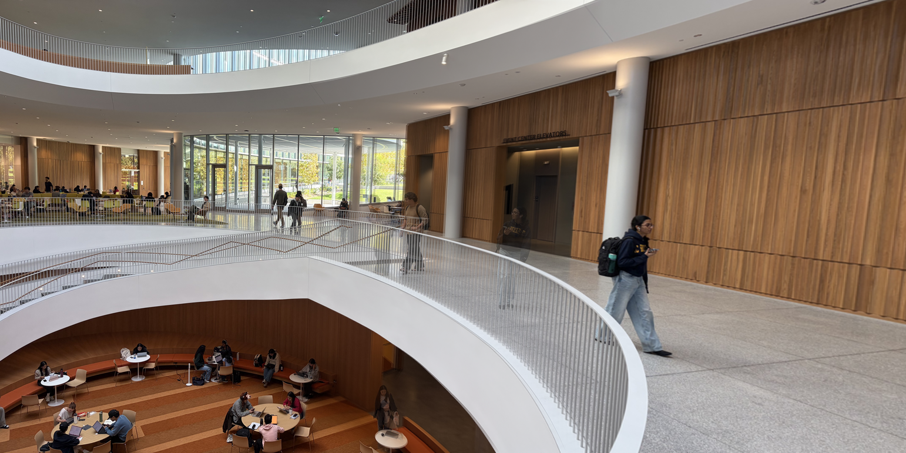
Open full-size imageElevator, columns and balcony structure are readable, but moving people create translucent ghosts and railings show local misalignment. Feathering smooths contribution boundaries; it cannot correct geometry or subject motion. A five-frame planar attempt crossed the projective horizon and is not claimed as a completed mosaic.
08 / CS 280A EXTENSION
A.5 · Cylindrical projection
The accepted nonplanar result uses the same atrium 03+04 photographs. Each source is projected directly from its orientation-corrected working photograph, not by bending a planar mosaic. The centered mapping and inverse are:
(6) Forward cylindrical map
c_x=(width−1)/2; c_y=(height−1)/2 u=f atan((x−c_x)/f) v=(y−c_y) f/√((x−c_x)²+f²)
(7) Inverse cylindrical sampling
θ=u/f; |θ|<π/2 x=c_x+f tan(θ) y=v/cos(θ) + c_y
Output pixels use this inverse and the existing manual bilinear sampler. Invalid samples have mask false. Sources are downscaled once before projection; f scales by the same factor. Projection origins are shifted by integer global translations, without resampling the projected images again.
(8) Manual translation registration
Δ_source→target = median_i(C(p_target,i)−C(p_source,i)) O_03=(0,0); O_04=Δ_04→03 I_cyl=feather_blend(shift(C(I_i), O_i))
The median is computed componentwise from all ten confirmed 04→03 pairs, without filtering. Rounded working offsets differ by at most 0.5 px per axis. Median/mean/maximum residuals are 25.86/46.21/132.90 original-resolution cylindrical pixels, not planar residuals or preview-sized values. Translation is approximate because capture is not calibrated pure yaw.


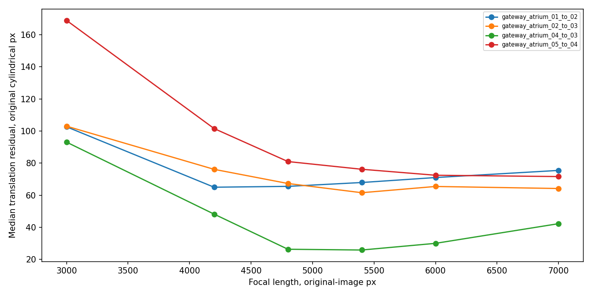
Open full-size imageEXIF records 5.96 mm focal length and 26 mm full-frame equivalent. Sensor/crop/stabilization calibration is unavailable, so these are rough starting clues. The selected f=5400 px is an empirical registration/visual choice, not verified camera calibration. Its single-image horizontal field of view is 55.74° in this model.

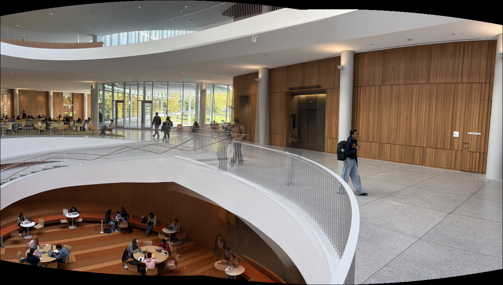
Open full-size image
Cylindrical projection reduces peripheral planar stretching and keeps the panorama bounded. Horizontal lines may curve on the cylinder; vertical architectural structure is generally better preserved here. Some railing misalignment and moving-person ghosts remain. Five-frame and central-three cylindrical attempts rendered but were rejected as primary evidence because of stronger doubled stairs/railings and cumulative drift. Only two sources are claimed in the accepted result.
09 / LIMITATIONS
Limitations
Unnormalized algebraic least squares is sensitive to coordinate scale and incorrect matches. Planar homographies cannot align multiple depths under camera translation, and wide fields can cross their projective horizon. Feathering cannot remove parallax, moving subjects or exposure changes. Cylindrical translation assumes approximately compatible viewing directions and a centered principal point; an empirical focal length is not a camera calibration.
10 / CONCLUSIONS
Implementation and conclusions
Custom homography estimation and inverse sampling support both rectifications and the three real planar scenes. The nearest/bilinear comparison demonstrates a measured speed–smoothness tradeoff. Narrower planar subsets and explicit display framing avoid overstating success on wider captures. Cylindrical projection provides a different wide-view geometry, while its residuals and visible ghosts make the registration limitations clear.
Numerical validation: 216 regression tests passed after the A.5 experiment, with further report-asset checks performed during preparation. NumPy handles the linear solve; Pillow handles image I/O and derivative resizing; Matplotlib provides figures; SciPy is used only for the feather distance transform. No high-level library homography, warp or stitcher replaces the custom implementations.
Assignment references: Fall 2026 Part A and project overview. Methods and examples were organized against the supplied Fall 2026 requirements. This report does not claim a newly verified camera calibration or perfect photographic seams.
Sources and assistance
Photographs and human-confirmed feature selections were supplied by the author. OpenAI Codex assisted with implementation, tests, experiment orchestration and report preparation. Actual numerical outputs and image results were inspected locally. This disclosure does not replace any additional acknowledgment required by the applicable course policy.